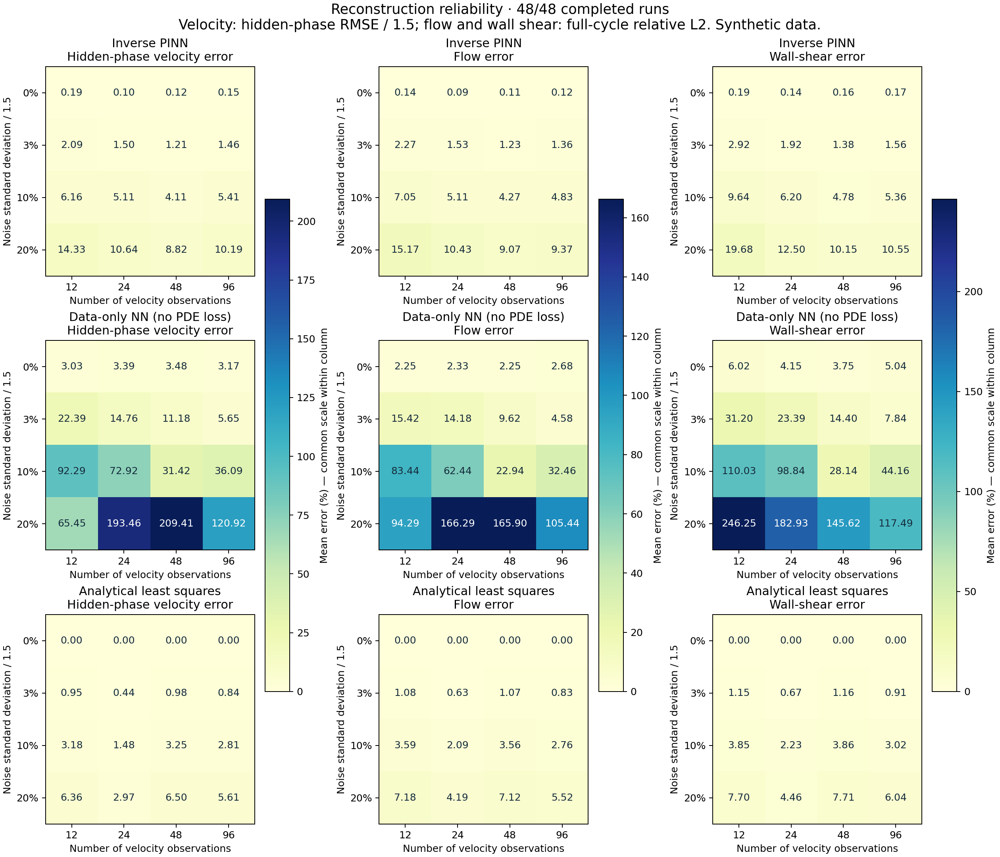

02 / Physics-informed learning · Simulation study
Recovering flow where measurements are missing.
A synthetic study of how physical equations help reconstruct pulsatile flow from sparse, noisy observations — with classical and neural baselines.
No installation needed. The demonstration opens in your browser using saved simulation results.

4 observation counts × 4 noise levels × 3 seeds
Part of the cycle with no velocity observations
Inverse PINN, neural baseline and analytical fit
How it works
An inverse PINN learns velocity and forcing coefficients while penalising the governing equation residual. Paired cases compare it with a neural network without that residual and analytical least squares using the correct solution family.
What to look for
The PINN improves mean hidden-phase errors over the neural baseline in all 16 configurations. Analytical least squares performs better than the PINN for all three reported metrics in all 16 configurations. The comparison shows both the benefit of physical constraints and the strength of a well-matched classical model.
What this study establishes
Entirely simulated data in a straight rigid tube with an idealised Newtonian flow model. This is reconstruction within a periodic cycle, not a clinical validation or prediction of an unseen future waveform. The benchmark assumes the correct model family.
Further reading
Experimental protocol · Full results
Next questions
Study model mismatch, more complex geometry and boundary conditions; connect reconstruction to state estimation, then evaluate independent experimental data.